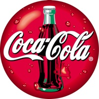
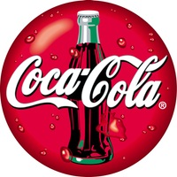

Popular News
COVID-19 Updates: New Pfizer Drug Reduces Hospitalization, Deaths by Almost 90%
Drugmaker Pfizer announced today that its new, oral COVID-19 drug has been found to reduce the risk of hospitalization and death in high-risk people by nearly 90 percent...
Holiday Travel During the Pandemic: Are Planes, Trains, or Automobiles Safer?
Traveling on different modes of transportation with others can come with varying degrees of risk during the pandemic. Here’s what to know...
Antonio Conte: Tottenham Players Showed Me They Have Heart, Says New Boss
"Today I saw the heart of my players, the passion, the will to fight, the will to sacrifice, to understand this was a very difficult moment for us," said Conte. "And to see this makes me more confident for the future...
Canelo Batters And Stops Caleb Plant To Become UNDISPUTED SUPER-MIDDLEWEIGHT CHAMPION
LAS VEGAS — When he decided to move up permanently to 168 pounds, Canelo Alvarez had the goal of becoming the undisputed super-middleweight champion. The only thing standing in his way of accomplishing the historic feat was IBF titlist Caleb Plant...
Reddit Users to Get Ethereum-Based Crypto Tokens in Exchange for Karma Points
Social networking platform Reddit seems to be catching up with the crypto culture and is likely to join contemporaries like Facebook on the next chapter of the Internet revolution. The platform is planning to offer Ethereum-based crypto tokens to people with specific numbers of Karma Points...
WhatsApp Can Now Be Used on Secondary Devices Offline: How to Enable
WhatsApp has started rolling out its anticipated multi-device support for a large number of users on both Android and iOS to let them use their account on secondary devices, without requiring their phones to be connected to the Internet...
Blind Optimism Can Only Take You So Far’: 4 Life Lessons I Learned From My First Grownup Holiday
It was the summer before my A-levels, and the perfect opportunity for my first taste of freedom. No parents, no friends’ parents: I grabbed my passport, packed my suitcase and headed for Zante with my best friend...
Are We Grownups Yet? 11 Surprising Facts About The Changing Nature Of Adulthood
From being entrepreneurial to happier single, young people today are making some rather different choices to previous generations...
-AVDERTISMENT-
 
